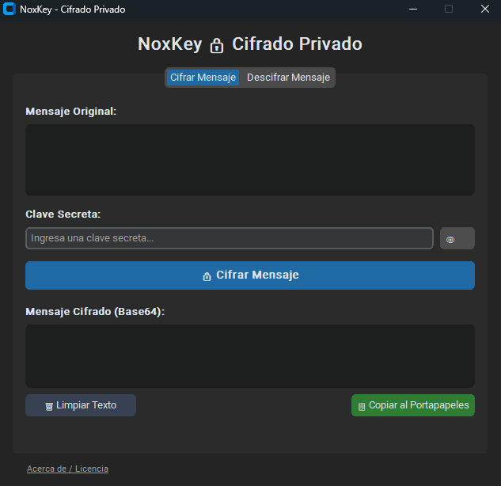

Pestaña: Cifrar Mensaje
Ingresa tu texto original y define una clave secreta. NoxKey deriva una clave criptográfica única con un salt aleatorio por cada mensaje mediante PBKDF2-HMAC-SHA256 (480,000 iteraciones) y genera una cadena segura en Base64 lista para copiar al portapapeles.